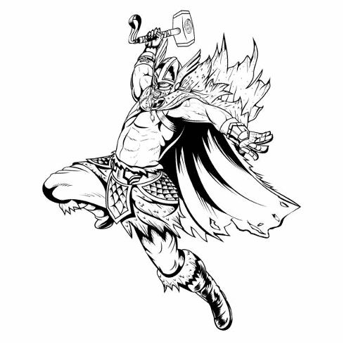
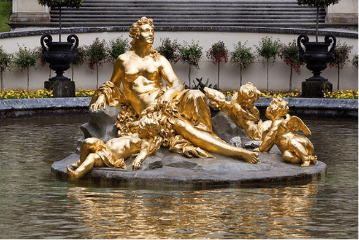

Скандинавські боги
Скандинавські боги є важливою частиною скандинавської культури. Цей аспект скандинавської культури може бути не так добре відомий стороннім, якщо хтось не має особливих інтересів. Тисячоліття, можливо, не так сильно турбується, щоб дізнатися більше про цих богів, але певним чином, напевно, чув дещо про них.
Те, як нордики виглядають сьогодні, може приховувати той факт, що вони мали богів як ключових компонентів їхньої міфології. Щоб повністю зрозуміти нордиків, має сенс вивчити їх богів, їхнє місце в минулому та нинішньому суспільстві.
Ви запитували когось із скандинавів про кількість богів та богинь, які існували у скандинавському світі? Більшість із них знайомі з ними. Скандинавська міфологія була популярна за межами Ісландії та Скандинавії до 19 -го го століття. Однак у скандинавській міфології було більше семи скандинавських богів і богинь.
Скандинавські боги вважаються міфологічними персонажами, а скандинавська міфологія передбачає дохристиянські легенди та вірування. Міфи про богів походять від Сноррі Стурлусон веб -сайт, ісландський історик, політик і поет. Крім скандинавських богів, скандинавська міфологія включає інші речі, такі як предмети, чарівні тварини, монстри, гноми та гіганти.
Одін: Король богів Есіра
- Одін був головним богом Росії Есір а також Святу залу Вальхалла російський правитель. Одін з’явився у міфі, де образ старого з’явився у темному плащі, і він блукав світом з метою здобуття знань. Його вважали богом мудрості, оскільки він все присвятив торгівлі мудрістю та знанням.
- Одін завжди обирав місце, щоб зайнятися різними справами, і це змусило його контролювати Валхаллу, також відому як Зал полеглих воїнів. Одін також приймав хоробрих, але полеглих воїнів, і він навіть жив з ними аж до Рагнарока. Незважаючи на те, що Одін особисто не брав участі в битвах, він бог війни через свою людську армію та силу.
-
Зазвичай, зрозуміти міф неясно, оскільки він не брав участі в жодних битвах, проте він є скандинавським богом війни. Він вважається богом війни особливим чином завдяки розумовим і магічним силам, якими він володіє.
Наприклад, він мав силу змусити своїх ворогів глухими, сліпими і боячись війни, що вони кинули і припинили боротьбу.
Тор: Вірний захисник Асгарда
- Тор – бог сили, бурі, блискавки та грому. Тор вважається сином Фьоргина та Одіна. Він також чоловік Сіфа, а також зведений брат Тіра і Балдура і батько Моді та Магні.
- Тор згадується в історії германського народу та під час Вік вікінгів . Його ідентифікують як потворну особину зі стволами грудей і носять магічну зброю. Найвідомішою зброєю Тора є молот Мйольнір, який міг вирівняти гори. Інші атрибути, пов’язані з ним, включають психічну міцність і фізичну силу.
- Тор також вважався богом святині, родючості та землеробства. Крім того, Сіф, золоте волосся дружини Тора, символізувало зернові поля, і тому їх союз уособлює зеленню та врожайність земель. Його також вважали найсильнішою істотою серед усіх людей і богів.
Фрея: Богиня долі і долі
-
Спільним серед інших трьох богів є те, що всі вони походять з Асгарда. Однак Фрейя була унікальною богинею з тих пір, як вона походила Ванахайм , Земля племені богів Ванір. Вона була богинею ювелірних прикрас, сексу, смерті та кохання.
- Фрея була сильним лідером, і вона головувала Фольквангр , свята земля. Фольквангр майже такий же, як і Валгалла, тому що вибрані впалі воїни були розділені, і половина переселилася б у Вальхаллу, так як інша половина переїхала з Фрейєю до Фольквангру.
- Крім того, вона подорожувала по всьому світу, щоб шукати свого загубленого чоловіка, і плакала золотими сльозами.
Локі: Бог -хитрун
- Вважається, що він володіє якостями, пов’язаними з пустотливими і хаотичними аспектами єгипетського бога. Серед інших скандинавських богів він – трюк, оскільки мав силу змінювати форми. Він проектується як особистість, яка не зовсім зла, а скоріше інтригує у жорстоких діях.
- У Локі були складні стосунки з Тором, і в одному випадку він продовжував ображати Тора, але потім сховався, бо боявся вбити молот Мьольнір. Більш того, вважається, що Локі винен у смерті кількох скандинавських богів, включаючи його сина Фенріра, який вбив Одіна. Крім того, його інше потомство, Йормунгандр, отруїло б Тора, що призвело б до його смерті.
Бальдер: Бог чистоти і світла
- Бальдер був молодшим сином Фрігґ та Одіна та зведеним братом Тора.
- Його вважали людиною милосердного божественного, мудрого і справедливого, оскільки його краса зневажала навіть витончені квіти, які були до нього.
- У порівнянні з іншими скандинавськими богами, він був найвишуканішим, бо хизувався його прикрашеними стовпами та позолоченими срібними компонентами, які дозволяли входити лише людям з чистим серцем.
Хель: Володар підземних світів
- У більшості випадків пекло пов’язане із зовнішнім прокляттям. Хел була дочкою Локі, а також гігантом Ангрбодою. Вона виконувала обов’язок судити і вирішувати долі інших осіб, які увійшли в її сферу.
- Крім того, вона зображена розкладеною з тілом і обличчям живих жінок, але з ногами і стегнами трупа. Серед скандинавських богинь вона була наймогутнішою.
Фрейр: Бог родючості
- Він є одним з улюблених скандинавських богів і сестрою -близнючкою Фреї, і він мав унікальне походження, оскільки належав до племені ванір. Фрейр також був шанованим богом, і він відповідав за родючість.
- Враховуючи його асоціації з важливими шляхами, Фрейр був улюбленим поклонінням і благоговінням, коли мова йде про урочистості та шлюбні обряди.